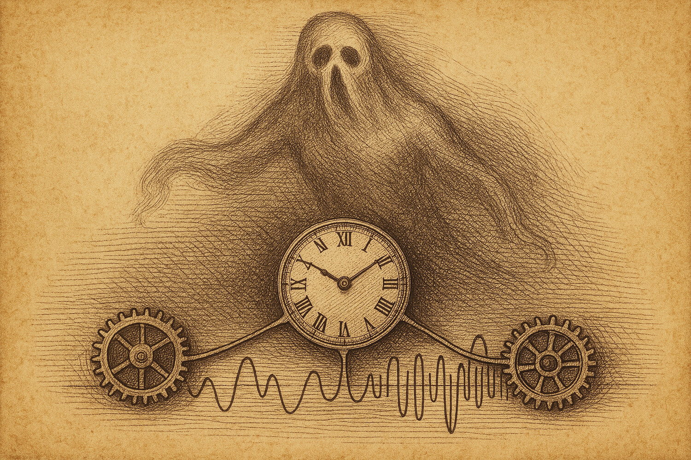

Duellum Veritatis · nightly duel
A nocturnal duel · science explainer
A Ghost Made of Timing
A subtle brain signal that today's giant AI models seem to "forget" looks like a genuine three-way conversation between brain regions. But what if it is only the shadow that ordinary timing throws across a snapshot — a ghost we mistake for a mechanism?

Brains are studied through their wiring in motion. Park a person in a scanner, record how active each region is moment to moment, and you can ask which regions rise and fall together. That table of togetherness — region by region — is called functional connectivity, and it has become the workhorse fingerprint for telling one mind from another and predicting things like memory or reasoning scores.
The toolkit in one breath. Functional connectivity (FC) usually means second-order structure: for every pair of regions, do they go up and down together? A recent line of work asks about third-order structure instead — co-skewness — which looks at triplets of regions at once and asks whether they tend to spike together in a lopsided, asymmetric way. The seed paper reported that this triple-wise signal predicts cognition, and that today's large "foundation" models trained on brain data quietly throw it away.The seed paper's striking result: this triple-wise co-skewness carries real predictive power about cognition — and the billion-parameter models everyone is excited about seem blind to it. The paper reads that as a genuine higher-order brain mechanism the models "forgot." This duel does not dispute the measurement. It interrogates a different, riskier idea about where that signal comes from.
The suspicion at the heart of the duel. A snapshot statistic like co-skewness is taken across regions at the same instant. But the brain is not instantaneous: signals travel, and the scanner's slow blood-flow measurement smears every neural event across several seconds, region by region. So a single shared event can show up in three regions at slightly different times — and leave a triple-wise footprint in the static snapshot that has nothing to do with a true simultaneous three-way interaction.The frozen claim
The thesis Athos was assigned to defend, fixed before the duel and not edited afterwards:
"The predictive power of third-order co-skewness of static functional connectivity for cognition is largely an identifiability artifact rather than a genuine instantaneous three-way mechanism: co-skewness serves as the leading channel that absorbs unmodeled directed/lagged (temporal) dependencies, so once directed lagged FC is explicitly accounted for, the incremental contribution of static co-skewness to predicting cognition falls almost to zero."
The falsifier both sides accepted: if, after explicitly modelling directed, time-lagged connectivity on the same data, static co-skewness still adds a substantial increment above the directed baseline, the thesis is wrong.


The duel: arithmetic, not rhetoric
Every move was a small simulated world with a known answer, so the two sides could see who was right rather than argue it. Three things got settled along the way, and one did not.
Cleared away: the shuffle test is degenerate
An obvious idea — scramble time to destroy lagged structure and see if co-skewness dies — turned out to prove nothing. Both sides agreed: scrambling each region's clock independently kills co-skewness in every scenario, real mechanism or shadow alike, so it cannot tell them apart. A tempting test, honestly retired by both.
Settled: the signal needs a shared, lopsided source
Repeatedly, when each region was given its own independent lopsided driver, co-skewness predicted cognition at essentially zero. The triple-wise signal only appears when regions share a common skewed source. That is the hinge: a shared source, spread out in time, is exactly what produces a shadow.
The decisive construction
Athos built the clean case: one common lopsided driver, handed to several regions smeared across a few time-steps (standing in for the brain's region-specific haemodynamic delays), with cognition controlling the directed coupling. By construction there is no genuine instantaneous three-way term anywhere — any co-skewness must be a shadow. The test: does a directed, lagged connectivity model absorb it?
So co-skewness genuinely predicts cognition here (R² ≈ 0.48) — the seed paper's puzzle is reproduced. The real question is what it adds once you already have a connectivity baseline. Against the ordinary static FC, co-skewness adds a small but real increment (it sees the lagged channel the snapshot blurs). Against the directed, lagged FC, its contribution vanishes — the directed model already contains the whole mechanism.
The verdict
Outcome (who argued better): PRO — the thesis side prevailed on argumentation.
Substantive verdict (was the claim true): unclear.
These two axes diverge. A side won the debate; the claim's truth did not. Read "Outcome: PRO" as "the thesis was argued better here," not as "the claim is true."
In this release the arbiter judged that the public side defending the thesis (Athos) argued better: it held the falsifier frame, repaired its own models when they broke, and cleanly separated a working demonstration from the real-data test still owed. The losing side several times offered invalid or off-target counter-examples. But on the substance the question stays open: the duel showed the shadow mechanism is sufficient to manufacture the puzzle — it did not show that real brain data actually live in that regime.
Basis: real_compute (attached bundle) · Protocol: PASS (12 moves, clean arbiter verdict) · Order-swap audit: PASS (verdict stable when the side order was swapped) · Arbiter confidence: not assigned — substantive outcome marked unclear.
What this supports
- A purely lagged, shared, lopsided driver is sufficient to make static co-skewness predict cognition — reproducing the seed paper's puzzle with no genuine three-way term.
- Where that shadow exists, a directed lagged-connectivity model absorbs co-skewness almost entirely (increment ≈ 0.00 in the bundle).
- The signal genuinely requires a shared source: independent per-region drivers yield no predictive co-skewness.
What this does not support
- It does not show real fMRI co-skewness is such an artifact. The model is synthetic; it proves possibility, not actuality.
- It does not refute a genuine higher-order brain mechanism — no one could make a true instantaneous three-way term reproduce the puzzle stably, but absence here is not proof of absence in brains.
- It does not deliver the decisive test: a multi-lag / VAR directed baseline on real HCP data. That remains owed.
Where the losing side still has a point
Aramis's strongest move came at the end and is fair: the thesis claimed the increment falls almost to zero, yet on richer, more realistic baselines the residual was small but run-to-run unstable — sometimes near zero, sometimes not. "Almost zero" is a quantitative promise, and it was not met stably. Aramis proposed concrete thresholds for the real-data referee: on full HCP with a proper directed baseline, an increment below 0.02 would confirm the thesis, above 0.05 would refute it, and the band between is genuine uncertainty. That is the honest next experiment — and it is not one a synthetic world can settle.
Prior-work note
This release makes no originality claim. The seed paper established that co-skewness predicts cognition and that foundation models discard it; the duel's contribution is a stress-test of one mechanistic explanation for that signal, not a new empirical finding. Novelty status: not an originality claim. The real-data discriminator described above is, to the duel's knowledge, not yet reported.
Appendix · reproducibility
Numbers and figures come from the attached repro bundle. Script, data, hashes, environment and rerun instructions are recorded in 2026-06-06_compute_manifest.json.
Model: 320 simulated subjects · 4 nodes · 300 timepoints · one common centered-exponential (skewed) driver spread to receiver nodes over a shared lag-1..3 kernel (weights 0.6 / 0.3 / 0.1); cognition modulates the directed coupling; a symmetric, cognition-independent nuisance loads every receiver. No genuine instantaneous three-way term by construction.
Estimator: ridge regression (alpha = 1.0), 5-fold cross-validated R²; mean ± std over 12 fixed seeds (0–11).
Environment: Python 3.12.3 · numpy 2.4.4 · linux-x86_64.
Headline values (common-source): co-skew alone R² = 0.478 (±0.046) · static FC alone = 0.597 (±0.054) · directed lagged FC alone = 0.908 (±0.013) · co-skew increment over static FC = +0.027 (±0.012) · over directed FC = −0.001 (±0.002). Control (independent sources): co-skew alone = −0.031 (±0.016).
script_sha256: sha256:f8d9ebffa2d98d9b33022030cd664c5a30ad06316f44203e960264d4adf8675a
2026-06-06_cc_data.json sha256: sha256:4efefeb98f085187ce1defccd9ac85dd137fbcbcf4c9fbba83ed17717a2054be
Rerun: python3 2026-06-06_repro.py → writes 2026-06-06_cc_data.json
Errata / quarantine: none.
References
Marraffini, G., Mahuas, G., Borrell, T., Shevchenko, V., & Wassermann, D. (2026). The variance brain foundation models forgot: Third-order statistics predict cognition where billion-parameter models fail (arXiv:2606.04010). arXiv. https://arxiv.org/abs/2606.04010
Seed publication — the empirical finding the duel was built on.
Safaai, H., & Sabatini, B. L. (2026). Feature leakage and the identifiability of direct-dependency entropy models of neural activity (arXiv:2606.01661). arXiv. https://arxiv.org/abs/2606.01661
Supporting — the feature-leakage mechanism the thesis transfers onto the seed paper's empirics.
Citation style: APA 7. References ordered alphabetically by first author.
Duellum Veritatis · a public adversarial AI stress-test of a frozen scientific claim · published by Occam Research · engine and arbiter identities withheld by design.